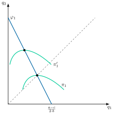
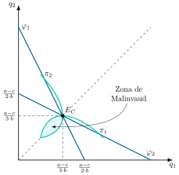
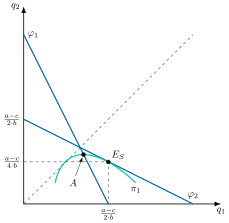
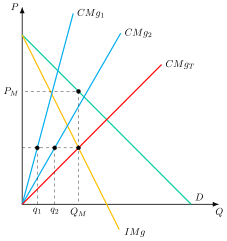
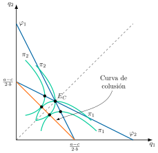
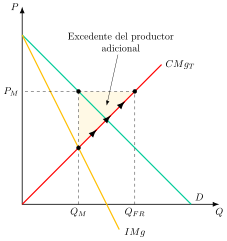
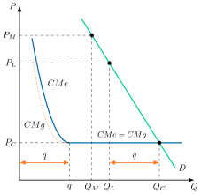

Apuntes para la oposición al Cuerpo de Diplomados Comerciales del Estado
9 Análisis de mercados (III). Teoría del oligopolio: soluciones no cooperativas y soluciones cooperativas. Análisis mediante la aplicación de la teoría de juegos.
9.1 Introducción  1'
1'
En las economías avanzadas, numerosos estudios muestran un aumento de la concentración industrial medida por indicadores como el Índice Herfindahl-Hirschman1, mark-ups empresariales, porcentaje de beneficios de las empresas sobre el PIB, etc. Así, existe un creciente debate público sobre si el poder de mercado se ha vuelto “demasiado grande”, en especial en el sector tecnológico: ¿cuáles son, si es así, sus implicaciones a nivel microeconómico y macroeconómico?
En este nuevo panorama, la interdependencia estratégica es mayor entre las empresas que dominan el mercado, estudiada por la teoría del oligopolio.
Así, la Teoría de la Organización Industrial en general (y la Teoría del Oligopolio en particular) se va a nutrir de la Teoría de Juegos2 como instrumento vertebrador de sus teorías. Esta se define como aquella rama de las matemáticas que estudia el comportamiento de los agentes (jugadores) que toman decisiones que les afectan mutuamente. Esta interdependencia obligará a los jugadores a considerar las posibles acciones del resto a la hora de desarrollar sus estrategias.
Por consiguiente, el objetivo de la presente exposición será el estudio de la teoría del oligopolio y de sus determinaciones de precios y cantidades a través del siguiente esquema:
Caracterización del oligopolio.
Oligopolios no cooperativos.
Oligopolios cooperativos.
Sostenibilidad del oligopolio, analizando las barreras de entrada.
9.2 Caracterización del oligopolio 1'
En primer lugar, cabe definir qué es lo que se consideraría un juego: se trata de una representación formal en la que un determinado número de individuos interactúa en un entorno de interdependencia estratégica3.
El oligopolio es una estructura de mercado con pocos vendedores, cada uno consciente de que sus decisiones afectan a los demás. Sus supuestos característicos son los siguientes:
Pocos oferentes y muchos demandantes.
Conocimiento común: todos los jugadores conocen las reglas del juego, saben que los demás también las conocen, saben que los demás saben que las conocen, y así sucesivamente.
Producto homogéneo y ausencia de sustitutivos cercanos.
Barreras de entrada al mercado.
Interdependencia estratégica y consciencia de ella por parte de las empresas. La consciencia de la interdependencia es muy importante, ya que implica que las estrategias de las empresas se basarán en variaciones conjeturales (es decir, creencia de la empresa 1 sobre cómo cambiará la variable de decisión de la empresa 2 –cantidad o precio– ante cambios en la variable de 1).
La consecuencia de los puntos 1-3 es que el oligopolista tendrá poder de mercado, es decir, se enfrentará a una curva de demanda que no será perfectamente elástica y que cumple con los supuestos de la Teoría de la Demanda. A su vez, se debe incorporar al análisis el concepto de variación conjetural, definida como la creencia que una empresa tiene sobre la forma en que sus competidores pueden reaccionar si varía su producción o precio.
A continuación, se analizarán 2 tipos de oligopolios: los no cooperativos y los cooperativos.
9.3 Oligopolios no cooperativos 7'
Se comenzará estudiando los oligopolios no cooperativos a través de análisis para 2 empresas.
Variable de decisión: cantidades
Cuando la variable de decisión son las cantidades, la empresa 1 maximiza su beneficio \[\begin{aligned} \underset{q_{1}}{\max} & \quad\pi_{1}=p\left(q_{1}+q^{e}_{2}\right)\cdot q_{1}-c_{1}\left(q_{1}\right) \end{aligned} \tag{9.1}\] tomando como dada la producción esperada de la empresa 2. La condición de primer orden resultante tiene la lectura habitual de todo problema de maximización de beneficios: la empresa debe producir hasta que su ingreso marginal iguale su coste marginal. La particularidad del oligopolio es que el ingreso marginal de la empresa 1 depende de cómo espera que reaccione la empresa 2 ante sus propias decisiones —lo que se conoce como variación conjetural—, de modo que la condición se escribe \[IMg=CMg\Rightarrow p\left(Q\right)+q_{1}\cdot\dfrac{\partial p}{\partial q_{1}}\bigg(1+\underbrace{\dfrac{\partial q^{e}_{2}}{\partial q_{1}}}_{{\text{Variaci{ó}n}\atop \text{conjetural} }}\bigg)=CMg \tag{9.2}\] donde \(\frac{\partial q^{e}_{2}}{\partial q_{1}}\), la variación conjetural, recoge precisamente esa conjetura: cómo cree la empresa 1 que cambiará la producción de la 2 ante una variación infinitesimal de su propia producción. Será precisamente el valor que se asuma para esta variación conjetural lo que distinga el caso de Cournot del de Stackelberg, como se verá a continuación.
Modelo de Cournot
Comenzando por el modelo de Cournot (1838), este sigue los siguientes supuestos:
2 empresas que toman sus decisiones simultáneamente y producen unas cantidades \(q_{1}\) y \(q_{2}\).
Existe miopía en la toma de decisiones, es decir, la variación conjetural es nula.
La demanda es lineal: \(P\left(q_{1},q_{2}\right)=a-b\left(q_{1}+q_{2}\right)\) y \(Q=q_{1}+q_{2}\).
Pendiente finita de la demanda lo que demuestra que hay cierto poder de mercado.
Costes marginales idénticos y constantes, es decir, rendimientos constantes a escala.
Producto homogéneo.
Subastador. Elige el precio al que se vacía el mercado para la oferta y la demanda.
A partir de las condiciones de primer orden, CPO, se pueden obtener las funciones de reacción de las empresas: en teoría de juegos, la función de reacción, \(\varphi_{1}\left(q_{2}\right)\), indica el nivel de producción, en este caso de la empresa 1, \(q_{1}\), que maximiza su beneficio dado el nivel de producción de la empresa 2, \(q^{e}_{2}\) \[\varphi_{1}\left(q_{2}\right)=q_{1}=\dfrac{1}{2}\cdot\dfrac{a-Cmg_{1}}{b}-\dfrac{1}{2}\cdot q^{e}_{2} \tag{9.3}\]
Las funciones de reacción de ambas empresas son simétricas ya que los costes marginales son iguales y tienen pendiente negativa, pues un aumento de \(q_{1}\) implica una disminución de \(q_{2}\) ya que ambas empresas se reparten el mercado.
Gráficamente, en un plano de \(q_{1}\) y \(q_{2}\) como el de la Figura 9.1
Las funciones de reacción pueden obtenerse a partir de las curvas isobeneficio: lugar geométrico de combinaciones del nivel de producción de ambas empresas que proporcionan el mismo nivel de beneficio a una de las empresas.
Cada curva isobeneficio de la empresa 1 alcanzará un máximo en el punto de intersección con su función de reacción y representarán un mayor beneficio según se desplacen hacia su eje de producción.
Concretamente, la empresa 1 obtiene su mayor beneficio cuando la empresa 2 produzca 0, \(q_{2}=0\), es decir, cuando se sitúe sobre su eje de producción4, produciendo una cantidad de monopolio \(\frac{1}{2}\cdot\frac{a-c}{b}\).

Analíticamente, el equilibrio se obtiene igualando las funciones de reacción, obteniéndose así la cantidad de producción para cada empresa, donde \(c\) es el coste marginal \[q_{i}=\dfrac{1}{3}\cdot\dfrac{a-c}{b},\quad i=\left\{ 1,2\right\} \tag{9.4}\] por lo que la cantidad total producida en Cournot será \[Q_{C}=\dfrac{2}{3}\cdot\dfrac{a-c}{b} \tag{9.5}\]
Gráficamente, como se observa en la figura Figura 9.2, el equilibrio coincidirá con la intersección de ambas funciones de reacción, ya que ambas empresas deciden simultáneamente, y la intersección coincidirá con la bisectriz del plano, pues ambas empresas tienen la misma estructura de costes.

Equilibrio de Cournot
Por otro lado, el equilibrio de Cournot tiene una serie de implicaciones
Es un equilibrio de Nash, que en terminología de teoría de juegos es una situación en la que cada jugador juega su estrategia mejor respuesta, dada la estrategia de los demás, por lo que no tiene incentivos a modificar su estrategia5.
Será estable si, en el plano de la figura, con \(q_{1}\) en abscisas, la pendiente de la función de reacción de la empresa 1 es mayor, en valor absoluto, que la de la empresa 2, ya que de lo contrario las curvas no convergerían al equilibrio mediante el proceso de ajuste dinámico entre ambas empresas.
No es un equilibrio eficiente en el sentido de Pareto, ya que ambas empresas estarían mejor cooperando. Esto se puede observar en el hecho de que las curvas isobeneficio de ambas empresas no son tangentes. En la lente formada por las curvas isobeneficio \(\pi_{1}\) y \(\pi_{2}\), denominada zona de Malinvaud (1972)6, ambas empresas obtendrían mayores beneficios.
Misma producción, si los costes de marginales de ambas empresas son iguales.
Modelo de Stackelberg
Por otro lado, en el modelo de Stackelberg (Stackelberg 1934) se parte de los mismos supuestos de Cournot, pero con una asimetría en el orden de las decisiones: existe una empresa líder7, que decide primero, y una empresa seguidora, que decide después observando la decisión de la líder. La empresa líder conoce la función de reacción de la seguidora, la cual mantiene una variación conjetural nula por lo que es un juego secuencial (análisis dinámico) donde la empresa líder decidirá primero. La variación conjetural de la líder, en cambio, es distinta de cero y negativa, ya que anticipa que cada unidad adicional que produzca reducirá la producción de la seguidora8.
Analíticamente, el problema maximizador de beneficios de la empresa líder sería el mismo que el de Cournot, solo que ahora estaría sujeto a una restricción: la función de reacción de la empresa seguidora, la cual es conocida para la empresa líder \[q_{2}=\varphi_{2}\left(q_{1}\right) \tag{9.6}\]
Las condiciones de primer orden incorporan esa variación conjetural negativa, que con demanda lineal vale \(\frac{\partial q_{2}}{\partial q_{1}}=-\frac{1}{2}\), y, sustituyendo en función de \(q_{1}\), se obtiene la cantidad óptima de producción de la empresa líder, que será la cantidad de monopolio9 \[q_{1}=\dfrac{1}{2}\cdot\dfrac{a-c}{b} \tag{9.7}\]
Sin embargo, el beneficio no será el de monopolio ya que habrá que sumar la producción de la seguidora, lo que reduce el precio respecto a la situación de monopolio. Sustituyendo la cantidad que produce la líder en la función de reacción de la seguidora se obtiene \[q_{2}=\dfrac{1}{4}\cdot\dfrac{a-c}{b} \tag{9.8}\]
Por consiguiente, sumando ( 9.7) y ( 9.8) la cantidad producida en Stackelberg será \[Q_{S}=\dfrac{3}{4}\cdot\dfrac{a-c}{b} \tag{9.9}\]
Gráficamente, en un plano de cantidad producida por la empresa 1 y la 2 como el de la Figura 9.3, el equilibrio no se produce en la intersección de las curvas de reacción ya que la líder, al elegir primero, se situará en la curva de isobeneficio más baja que sea tangente a la curva de reacción de la seguidora.

Equilibrio de Stackelberg
En cuanto a las implicaciones del equilibrio de Stackelberg
El equilibrio de Stackelberg, \(E_{S}\), es un equilibrio de Nash, pero no es eficiente en el sentido de Pareto porque la seguidora podría obtener mayores beneficios a través de la cooperación sin disminuir los beneficios de la líder en el punto A.
Pérdida de eficiencia menor que en Cournot porque la cantidad global producida es mayor: \(Q_{S}>Q_{C}\).
Conclusión de los modelos de Cournot y Stackelberg
En suma, en ambos modelos analizados, como consecuencia del comportamiento miope y de que son juegos de una sola vez (no repetidos), no se maximizan los beneficios conjuntos. Por lo tanto, a largo plazo es poco probable que sigan compitiendo y no colaboren.
Variable de decisión: precios
Por otro lado, dentro de los oligopolios no cooperativos la variable decisión de las empresas también pueden ser los precios. Para ello, se analizará el duopolio simultáneo de Bertrand (1883). Concretamente, uno de los supuestos menos realistas de los modelos anteriores era el tipo de competencia ya que, a corto plazo, es más lógico competir en precios que en cantidades.
Se van a asumir los mismos supuestos que en el caso de Cournot pero ahora las empresas toman sus decisiones sobre los precios tomando como dados los precios de las demás empresas10.
La principal implicación es que en el equilibrio si ambas empresas tienen la misma estructura de costes los precios de ambas empresas deben ser idénticos e iguales a su coste marginal: \[p_{1}=p_{2}=CMg_{i},\quad i=\left\{ 1,2\right\} \tag{9.10}\] dando lugar al equilibrio competitivo.
Esto ocurre ya que, como el producto es homogéneo, si una empresa fijase un precio más bajo se haría con toda la demanda. Sin embargo, la otra empresa reaccionaría también bajando el precio. Este proceso se repetiría hasta que el precio de 1 se igualase al precio de la empresa 2 y se igualase al coste marginal.
Paradoja de Bertrand
Por lo tanto, se da la denominada como paradoja de Bertrand con un equilibrio equivalente al de competencia perfecta dando lugar a un oligopolio competitivo, siendo la cantidad producida \[Q_{B}=\dfrac{a-c}{b} \tag{9.11}\]
Equilibrio de Bertrand
Concretamente, el equilibrio de Bertrand es un equilibrio de Nash, ya que ninguno de los oligopolistas puede incrementar su beneficio modificando su precio, pero no es un óptimo de Pareto, ya que las empresas podrían obtener mayores beneficios cooperando.
Críticas
No obstante, su resultado es muy dependiente de los supuestos de partida, ya que la variación de cualquiera conduciría a una situación radicalmente distinta11:
Si el coste marginal de ambas empresas fuera diferente, la empresa con menores costes acapararía todo el mercado pudiendo incluso fijar precios de monopolio dependiendo de donde se sitúen los costes marginales de la empresa competidora: si el coste marginal de la rival es lo bastante bajo, la empresa 1 solo puede capturar todo el mercado fijando un precio justo por debajo de ese coste, obteniendo un margen igual a la diferencia de costes; pero si el coste marginal de la rival es tan alto que supera el propio precio de monopolio de la empresa 1, esta no necesita preocuparse por la rival en absoluto y puede fijar directamente su precio de monopolio sin riesgo de que la rival le rebaje el precio.
Si el producto no fuera homogéneo sino ligeramente diferenciado, las funciones de reacción dejarían de ser discontinuas y pasarían a tener pendiente positiva: los precios se convierten en complementos estratégicos, de modo que si la rival sube su precio, a la empresa también le conviene subir el suyo, justo lo contrario de lo que ocurre con las cantidades en Cournot, que son sustitutos estratégicos (Tirole 1988)12.
Si no existen rendimientos constantes a escala
Ante rendimientos crecientes, se podría generar una guerra de precios no pudiendo existir equilibrio ya que conllevaría pérdidas.
Con rendimientos decrecientes, por ejemplo, derivado de límites de capacidad, la demanda residual no atendida por la empresa con menores costes que acapara el mercado, podría ser atendida por otras empresas a un precio mayor.
Cabe preguntarse si es posible reconciliar los resultados de Cournot y Bertrand, que predicen equilibrios radicalmente distintos a partir de supuestos de comportamiento aparentemente similares. Kreps y Scheinkman (1983) ofrecen una respuesta mediante un juego en dos etapas: en la primera, las empresas eligen simultáneamente su capacidad productiva, igual que en el modelo de Cournot; en la segunda, compiten en precios tomando esa capacidad como dada, con un mecanismo de racionamiento eficiente de la demanda no atendida. El resultado es que el equilibrio de precios de la segunda etapa conduce exactamente a las cantidades y al precio del equilibrio de Cournot: la competencia en precios, cuando está limitada por decisiones previas de capacidad, reproduce el resultado en cantidades. Esta síntesis explica por qué el supuesto de capacidad ilimitada de Bertrand es crucial para su resultado competitivo.
Teniendo en cuenta modelos dinámicos y considerando las estrategias de los competidores, el resultado será el de una situación de oligopolio cooperativo, que se analizará a continuación.
| Producción | Beneficio | Nash | Pareto | |
| Competencia perfecta o Bertrand | \(\dfrac{a-c}{b}\) | 0 | \(\checkmark\) | \(\times\) |
| Oligopolio de Stackelberg | \(\dfrac{3}{4}\cdot\dfrac{a-c}{b}\) | > 0 | \(\checkmark\) | \(\times\) |
| Oligopolio de Cournot | \(\dfrac{2}{3}\cdot\dfrac{a-c}{b}\) | >> 0 | \(\checkmark\) | \(\times\) |
| Monopolio | \(\dfrac{1}{2}\cdot\dfrac{a-c}{b}\) | >>> 0 | \(\times\) | \(\checkmark\) |
9.4 Oligopolios cooperativos 6'
Hasta el momento se han estudiado situaciones en las que las empresas competían entre sí en el mercado. No obstante, se ha demostrado que las empresas estarían en mejor situación si cooperasen, tomando sus decisiones de fijación de precios y cantidades de forma conjunta con el fin de actuar en la práctica como un único monopolista y maximizando los beneficios conjuntos a repartir. Cabe distinguir entre colusión explícita y tácita.
Colusión explícita: cártel
Cuando la colusión es explícita, se constituye lo que se denomina como un cártel. Ejemplos de estos van desde los gremios medievales, la OPEP o incluso los cárteles del narcotráfico13.
Dentro de un cártel, los oligopolistas renuncian a su autonomía delegando la toma de decisiones en una agencia central de cártel que establece el reparto de cuotas del mercado. El problema del cártel es análogo al del monopolio multiplanta ya que existirán varias estructuras de costes.
Gráficamente, en un plano de precios y cantidades como el de la Figura 9.4 se representan:
Una única demanda, \(D\), e ingreso marginal, \(IMg\), y, suponiendo 2 oligopolistas, las curvas de costes marginales de las empresas de cuya suma se determina la curva de costes marginales total, \(CMg_{T}\).
De la intersección de los costes marginales con los ingresos marginales y proyectando hasta la demanda, se establecerá el precio de equilibrio del mercado, \(P_{M}\), y proyectando el equilibrio hacia las estructuras de costes de las empresas cada una de las cuotas de mercado, \(q_{1}\) y \(q_{2}\).

Sin embargo, será necesario estudiar la sostenibilidad de la cooperación, ya que no siempre será posible llegar a pactos que permiten llegar a un cártel sostenible ya que hay una serie de factores que dificultan la colusión como
Reparto de beneficios, donde la solución solo es sostenible si ambas empresas mejoran.
Gráficamente, en un plano de cantidades de 1 y 2 como el de la Figura 9.5 se representan las curvas isobeneficio de cada una de las empresas. La curva de colusión es el lugar geométrico de los puntos en que una isobeneficio de la empresa 1 es tangente a una de la empresa 2, y une las cantidades de monopolio de ambas empresas14.
El cártel solo maximizará beneficios en cualquiera de los puntos sobre dicha recta mientras que fuera de la misma el cártel podría ser inestable.
Figura 9.5: Curva de colusión 
Superioridad absoluta en costes de una empresa, donde la empresa con menores costes producirá la cantidad de monopolio y el resto de empresas no producirá nada.
La empresa productora debería otorgar pagos compensatorios al resto de empresas por su cooperación.
Sin embargo, esta solución es poco creíble ya que pocas empresas estarán dispuestas a cerrar para aceptar después pagos compensatorios.
Número elevado de empresas, ya que cuantas más empresas participen en el oligopolio más costosa será la cooperación.
Tentación a la violación de la colusión, ya que la cooperación vía cártel no es un equilibrio de Nash, por lo que existirán incentivos a desviarse del acuerdo.
Gráficamente como se observa en la Figura 9.6 la empresa actuará como monopolista sobre un n-ésimo de la demanda.
Sin embargo, encontrará más beneficioso actuar como un free-rider, es decir, aumentar la producción hasta que se iguale el precio al coste marginal del resto del monopolio en \(Q_{FR}\) y apropiándose del excedente del productor adicional15.
Por lo tanto, la empresa preferirá incumplir el acuerdo tanto si el resto de empresas lo cumplen o no, dándose lo que en teoría de juegos se conoce como estrategia dominante. Una estrategia dominante es aquella que proporciona a un jugador los mayores pagos independientemente de lo que hagan sus rivales.
Así, la no cooperación sería el equilibrio de Nash, pero no un óptimo de Pareto, ya que todas las empresas podrían obtener mayores beneficios cooperando. Este último punto es lo que se conoce en teoría de juegos como dilema del prisionero.

Dilema del prisionero16
El dilema del prisionero se puede representar a través de una matriz de pagos de teoría de juegos como el del Tabla 9.1 donde se representan las 2 empresas y sus estrategias sobre cooperar o no cooperar. La estrategia dominante de ambas empresas es la no cooperación, dando lugar a una situación similar a la de Cournot17.
| Empresa 2 | |||
| Cooperar | No cooperar | ||
| Empresa 1 | Cooperar | 5,5 | 1,10 \(\checkmark\) |
| No cooperar | \(\checkmark\)10,1 | \(\checkmark\)2,2 \(\checkmark\) | |
Soluciones
El cártel solo perdurará en el tiempo si se aplica alguna de las soluciones al dilema del prisionero, como
Apelar a un Agente externo para que refuerce el acuerdo y que pueda imponer soluciones
Altruismo o forjar una relación de confianza entre empresas, es decir, si los agentes se ponen en el lugar del otro
Interrelaciones prolongadas en el tiempo indefinidamente o superjuego18, de modo que, siempre que el futuro se valore lo suficiente, respetar el acuerdo puede sostenerse como equilibrio.
Estrategias trigger o gatillo
Esto último se dará si en el acuerdo se recoge una estrategia tipo trigger o gatillo que en teoría de juegos es aquella estrategia en la que las empresas cooperarán mientras todos cooperen y dejarán de hacerlo cuando alguna no coopere:
Así, la empresa cooperará –y el cártel será sostenible– cuando el flujo de beneficios en el tiempo de la estrategia a cooperar, \(\pi^{C}\), sea mayor que el beneficio de romper el acuerdo, \(\pi^{FR}\), más el flujo de beneficios en el tiempo de no cooperar, \(\pi^{NC}\), donde \(\beta\) representa el factor de descuento \[\dfrac{\pi^{C}}{1-\beta}\geq\pi^{FR}+\beta\cdot\dfrac{\pi^{NC}}{1-\beta} \tag{9.12}\] es decir, las empresas solo respetarán el acuerdo si las ganancias perpetuas de cooperar son mayores que las ganancias perpetuas de no hacerlo19.
Este umbral de paciencia se generaliza fácilmente a un cártel de \(n\) empresas simétricas: la colusión es sostenible si el factor de descuento cumple \[\beta\geq1-\dfrac{1}{n} \tag{9.13}\] (Nicholson y Snyder 2017)—cuantas más empresas formen el cártel, mayor debe ser su paciencia para que el acuerdo se mantenga, ya que cada una se queda con una porción menor de los beneficios colusorios y el incentivo relativo a desviarse crece.
De esta manera, cuando mayor sea el factor de descuento, que representa el grado de paciencia de las empresas, habrá más posibilidades de que cooperen y de que el cártel sea sostenible. No obstante, para que la estrategia tipo trigger funcione es necesario que la amenaza de no cooperación sea creíble, es decir, que cuando una empresa haya actuado como free rider el resto obtengan mayores ganancias no cooperando que cooperando.
El resultado anterior asume que las empresas observan directamente si un rival ha incumplido el acuerdo, lo que garantiza que el castigo sea inmediato y la amenaza, creíble. Sin embargo, en muchos mercados reales las empresas solo observan el precio de mercado, sujeto además a perturbaciones de demanda ajenas a su comportamiento. Green y Porter (1984) analizan cómo sostener la colusión en ese contexto de información imperfecta: si el precio cae por debajo de un umbral determinado, las empresas no pueden distinguir si se debe a una caída de la demanda o a que un rival ha bajado precios de forma encubierta, por lo que desencadenan igualmente una guerra de precios de duración limitada como castigo, tras la cual se retoma la cooperación. La colusión sigue siendo sostenible en equilibrio, pero a costa de guerras de precios periódicas que se producen incluso cuando nadie ha incumplido realmente el acuerdo.
Frente a esta fragilidad interna de los cárteles, las autoridades de defensa de la competencia han desarrollado un mecanismo que la explota desde fuera: los programas de clemencia, que premian a la empresa participante en un cártel que lo denuncie —y aporte pruebas de su existencia— con la exención del pago de una eventual sanción.20 Al ofrecer a cada miembro del cártel un incentivo adicional para desviarse que compite directamente con el incentivo a mantener el acuerdo, estos programas debilitan aún más la ya de por sí precaria sostenibilidad de la colusión analizada en este bloque.
Colusión tácita
Por otro lado, dentro de los oligopolios cooperativos la colusión puede ser tácita, es decir, una coordinación de precios o cantidades que las empresas alcanzan sin ningún acuerdo, solo observando y anticipando la conducta de sus rivales. Surge a largo plazo, cuando deja de existir miopía, y complica el control de las autoridades por la dificultad de probar su existencia21.
9.5 Sostenibilidad del oligopolio 4'
Frente a la inestabilidad interna de la colusión analizada en el bloque anterior —donde cada empresa tenía incentivos a desviarse del acuerdo—, la sostenibilidad del oligopolio en el largo plazo depende de un mecanismo distinto: las barreras de entrada. Hasta aquí hemos presentado los modelos cooperativos y los no cooperativos, que tenían en común la existencia de barreras de entrada que impedían la irrupción de nuevas empresas. Y es que en oligopolio, los beneficios extraordinarios atraerán a nuevas empresas que, en principio, eliminarán dichos beneficios. Sin embargo, si existe algún tipo de barrera a la entrada, puede que esto no ocurra. Formalmente, una barrera de entrada es un coste de producción que debe soportar la empresa entrante pero no las empresas ya instaladas (Stigler 1968), una asimetría que las incumbentes pueden explotar precisamente porque no todas las empresas parten de la misma posición.
En este apartado vamos a analizar cómo ha evolucionado el papel de las barreras de entrada en la teoría del oligopolio:
En una primera etapa de la Teoría de la Organización Industrial, la Escuela de Chicago argumentó que la generación de beneficios extraordinarios incentivaría la entrada de nuevas empresas y, por tanto, un oligopolio nunca sería sostenible en el largo plazo. La competencia acabaría imponiéndose.
Sin embargo, teorías posteriores refinarían los planteamientos de la Escuela de Chicago, indicando que su argumentación sólo es válida si no existen barreras de entrada.
Tipos de barreras de entrada:
Legales: licencias, patentes, etc.
Acceso privilegiado a factores productivos (por ejemplo, río, mina).
Técnicas: ventajas en costes (por ejemplo, economías de escala, de experiencia, o de gama).
Estratégicas: son las creadas por las propias empresas ya presentes en la industria.
Barreras técnicas
Existen barreras técnicas o naturales que suelen estar relacionadas con la posesión de determinadas materias primas o recursos y hacen referencia a economías de escala, derivadas de rendimientos crecientes de escala que permiten operar a menores costes medios. Las entrantes podrían instalarse con su tamaño óptimo pero provocaría una bajada de precios del mercado pero si eligen instalarse con un tamaño menor que el óptimo entonces dificultarían su supervivencia.
Otras barreras técnicas pueden estar relacionadas con las ventajas en costes, requerimientos de capital inicial o diferenciación del producto.
Centrándonos ahora en las barreras estratégicas, creadas deliberadamente por las empresas ya instaladas, a continuación se desarrolla el modelo del precio límite.
Modelo del precio límite
El modelo del precio límite de Bain (1956; Sylos-Labini 1962; Modigliani 1958) parte de la hipótesis de que las empresas instaladas (incumbentes) no maximizan sus beneficios con un precio de monopolio, sino que establecen un precio tal (“precio límite”) que la entrada de un competidor adicional con su capacidad mínima provocaría una caída del precio que eliminaría todo el beneficio extraordinario, tanto para la entrante como para las ya instaladas
Supuestos del modelo:
El mercado está dominado por un monopolista o cártel, y existe una empresa que es una entrante potencial.
Tanto la empresa establecida como la potencial tienen la misma tecnología.
La tecnología presenta inicialmente rendimientos crecientes a escala y, a partir de un cierto nivel de producción, rendimientos constantes.
La incumbente amenaza con mantener constante la producción en caso de entrada de la potencial.
Gráficamente, en un plano de precios y cantidades como el de la Figura 9.7, se representan tres pares de precio y cantidad: el de monopolio (\(P_{M},Q_{M}\)), el límite (\(P_{L},Q_{L}\)) que la incumbente elige realmente para disuadir la entrada, y el de competencia (\(P_{C},Q_{C}\)), al que se llegaría en un mercado perfectamente competitivo:
Se representa la curva de demanda, \(D\), y la curva de coste medio, \(CMe\). Para cualquier precio mayor que el precio límite, \(P_{L}\), el incumbente obtiene mayores beneficios a corto plazo, pero a largo plazo entrarán nuevas empresas en el mercado y los beneficios extraordinarios se reducirán.
La incumbente elige \(Q_{L}\) de forma que \(Q_{C}-Q_{L}=\bar{q}\), donde \(\bar{q}\) es la escala mínima eficiente del entrante: si este produjera exactamente \(\bar{q}\), la cantidad total del mercado alcanzaría \(Q_{C}\) y el precio caería hasta \(P_{C}\), justo donde su coste medio también toca su mínimo —beneficio nulo—. Si en cambio produce algo menos que \(\bar{q}\), su \(CMe\) todavía no ha bajado del todo hasta \(P_{C}\), mientras que el precio de mercado, al quedar la cantidad total algo por debajo de \(Q_{C}\), solo sube ligeramente por encima de \(P_{C}\): el coste crece más deprisa de lo que sube el precio, y la entrada genera pérdidas.
Así, el coste de la barrera estratégica para la incumbente es un coste de oportunidad: al producir \(Q_{L}>Q_{M}\) para cerrar esa ventana de entrada, cobra un precio \(P_{L}<P_{M}\) y renuncia a la diferencia de beneficio que obtendría actuando como monopolista puro.

La amenaza de mantener la producción de la incumbente no es creíble, ya que si la nueva empresa entra, no sería racional que la incumbente mantuviera la producción inicial: lo lógico sería que acomodara la entrada de la nueva empresa adaptando su producción para maximizar beneficios. La única manera de que la amenaza de mantener el nivel de producción sea creíble es que:
El juego dure un número infinito de períodos (o que no se sepa cuándo va a acabar) y los jugadores sean suficientemente pacientes22.
La empresa incumbente incurra en costes hundidos que fuerzan a la empresa a ejecutar su amenaza. Vamos a analizar esta última cuestión en un juego de 3 etapas.
Planteemos el juego extensivo en 3 etapas con 2 empresas: la instalada (monopolista o cártel) y la entrante, siguiendo el modelo de inversión en capacidad de Dixit (1979, 1980):
Etapa: la incumbente puede mantener una actitud pasiva (es decir, esperar a la entrante), o activa (incurriendo en un coste hundido –por ejemplo, ampliando su capacidad productiva–).
Etapa: la empresa entrante decide si entrar o no.
Etapa: si la entrante ha entrado, la incumbente puede luchar o acomodarse en función de su rentabilidad.
Formalmente, sea \(\pi^{M}\) el beneficio de monopolio, \(\pi^{D}\) el beneficio de duopolio de la incumbente si se acomoda y \(\pi^{L}\) su beneficio si lucha contra la entrante. Si la incumbente ha incurrido en el coste hundido \(C_{0}\), ese coste no penaliza el beneficio de luchar —la capacidad ampliada se emplea precisamente para ello—, pero sí el de acomodarse (\(\pi^{D}-C_{0}\)) o el de quedarse sola sin que haya entrado nadie (\(\pi^{M}-C_{0}\)). Resolviendo por inducción hacia atrás:
Tercera etapa: la incumbente luchará solo si \(\pi^{D}-C_{0}<\pi^{L}\).
Segunda etapa: anticipándolo, la entrante no entrará si prevé que la incumbente luchará, porque en ese caso incurriría en pérdidas.
Primera etapa: a la incumbente solo le convendrá incurrir en el coste hundido si con ello logra quedarse sola en el mercado y \(C_{0}<\pi^{M}-\pi^{D}\).
Mercados contestables o impugnables
Con su teoría, Baumol (Baumol et al. 1982) da un giro al debate sobre la necesidad de regular los mercados de competencia imperfecta: para él, el número de empresas presentes en una industria es irrelevante, pues lo que importan son las condiciones de entrada y de salida.
En efecto, si en un mercado los outsiders pueden entrar a competir sin desventajas respecto a los operadores instalados, dicho mercado es impugnable, y en la medida en que los precios de la industria estén por encima del coste medio, se podrían dar en él estrategias de hit and run: un outsider entra, vende a un precio menor, obtiene beneficios extraordinarios, y sale del mercado.
Por ello, las empresas que operan en mercados contestables tenderán a comportarse de manera competitiva (\(P=CMe\)), y no habrá beneficios extraordinarios. De esta manera, si conseguimos que el mercado sea atacable, entonces podremos llegar a una solución competitiva sin que se cumplan los requisitos especialmente restrictivos de la competencia perfecta.
Condiciones de mercado impugnable
Las condiciones que se tienen que dar para que un mercado sea impugnable son:
No puede haber ventajas absolutas en costes (es decir, igualdad de acceso a la tecnología).
Puede haber rendimientos crecientes a escala, e incluso un monopolio natural, siempre que entrar y salir no suponga costes hundidos23.
Puede haber costes fijos, pero no hundidos (es decir, no hay barreras a la salida).
Existen costes de modificar los precios –costes de menú–.
La demanda se adapta instantáneamente a los precios24.
No hay diferenciación del producto.
Implicaciones de política económica.
Las implicaciones de política económica de los mercados contestables son muy potentes: la política de defensa de la competencia debe interesarse más por las barreras que por el número de empresas en un mercado:
Esto es muy importante desde el punto de vista práctico, ya que eliminar las barreras a la entrada es más fácil que aumentar el número de competidores.
El sistema español de defensa de la competencia parece guiarse por la teoría de los mercados impugnables. En efecto, la Ley 15/2007, de Defensa de la Competencia, señala en su preámbulo que el objetivo debe ser la defensa de una “competencia efectiva”, es decir, que persigue que el mercado se comporte de manera competitiva, con independencia del número de empresas presentes en él.
Los sectores donde más impacto ha tenido esta concepción de la defensa de la competencia han sido las industrias de red (esto es, aquellas que prestan su servicio a través de una infraestructura en red, como vías, tendidos o cables, cuya construcción exige una fuerte inversión inicial, mientras que el coste marginal de atender a un usuario más es muy bajo, por ejemplo, ferrocarriles, energía o telecomunicaciones).
9.6 Conclusiones  1'
1'
Como conclusión, pese a los avances teóricos en el estudio del oligopolio es muy difícil tener un cuadro completo respecto a la formación de precios debido a la multitud de factores que intervienen en su análisis (por ejemplo, información asimétrica, existencia de equilibrios múltiples, posibilidad de renegociación de un acuerdo dinámico y cambiante, la presencia de avances tecnológicos, etc.).
Por este motivo, una de las formas más prometedoras de luchar contra la colusión es incentivar su propia inestabilidad interna, como hacen los programas de clemencia ya analizados.
Finalmente, cabe destacar que la teoría del oligopolio (o competencia imperfecta) es susceptible de extensión mediante la consideración de bienes diferenciados.
Apéndice
9.A.1. Ejemplos de oligopolios
Existen diferentes ejemplos de oligopolios tanto en precios (modelo de Bertrand) como en cantidades (Modelo de Cournot):
Competencia en precios: Sectores como las telecomunicaciones (especialmente en ofertas de tarifas móviles o de fibra), la distribución minorista (supermercados, grandes almacenes en productos básicos) y, en cierta medida, algunas aerolíneas (en rutas muy competidas).
Competencia en cantidades: Sectores como la automoción, la industria química pesada, la fabricación de aviones o la producción de acero. En estos casos, las empresas invierten en capacidad de producción a largo plazo y luego compiten para vender lo que han producido, influyendo en el precio de mercado a través de la cantidad total ofrecida. En el caso de las bebidas como Coca-Cola y Pepsi, compiten por la cantidad de producto vendido y por la omnipresencia en los puntos de venta.
Sin embargo, es importante notar que en la realidad muchos oligopolios exhiben una mezcla de ambos tipos de competencia, o pueden alternar entre una y otra dependiendo de las condiciones del mercado y la estrategia de las empresas. Además, la diferenciación del producto, la publicidad, la innovación y los servicios postventa también son herramientas clave de competencia en los oligopolios.
Finalmente, también cabe destacar algunos ejemplos de lider-seguidora (modelo de Stackelberg):
Industria Automotriz (Vehículos Eléctricos): Tesla actúa como líder, invirtiendo masivamente y fijando la pauta en vehículos eléctricos e infraestructura de carga. Los fabricantes tradicionales (seguidores) observan su estrategia y éxito, luego adaptan sus propios planes de producción y desarrollo de VE. Tesla toma la iniciativa en un mercado emergente, obligando a los demás a reaccionar y seguir su dirección para no quedarse atrás en la transformación del sector.
Tecnología y Electrónica de Consumo: Apple suele ser el líder al lanzar productos innovadores como el iPhone. Establece tendencias de diseño, características y precios premium. Competidores como Samsung o Xiaomi (seguidores) analizan el impacto de Apple y luego lanzan sus propias ofertas, buscando diferenciarse o competir con precios más bajos. Apple da el "primer golpe" en la innovación, y los demás ajustan sus estrategias en función de esa jugada inicial.
Telecomunicaciones (Inversiones en Infraestructura): Grandes operadores como Movistar a menudo actúan como líderes en el despliegue de nuevas redes, como el 5G. Su enorme inversión inicial en infraestructura y cobertura establece un precedente. Los competidores más pequeños o con menos recursos (seguidores) observan esta escala y deciden sus propias estrategias de despliegue, adaptándose a la hoja de ruta que el líder ha marcado en el mercado de telecomunicaciones.
Comercio Minorista (Logística): Amazon es un claro líder en el comercio electrónico y la logística de entrega. Sus inversiones en almacenes automatizados y redes de distribución establecen un estándar de eficiencia. Otros minoristas (seguidores como Walmart o El Corte Inglés) deben adaptar y mejorar sus propias cadenas de suministro y servicios de entrega para intentar igualar la conveniencia y rapidez que Amazon ha impuesto en el sector.
Industria Farmacéutica (Lanzamiento de Medicamentos): Una farmacéutica como Pfizer que invierte en I+D para un medicamento revolucionario actúa como líder. Su decisión de introducir el fármaco y su precio inicial marcan la pauta. Otras compañías (seguidores) con tratamientos similares o genéricos observan el éxito del líder y ajustan sus propias estrategias de desarrollo o comercialización. El que llega primero al mercado con una innovación define las reglas iniciales del juego.
9.A.2. Los cárteles de la droga como caso extremo de oligopolio
Los cárteles de la droga pueden entenderse como un caso extremo de oligopolio y, más concretamente, de cártel (Fiorentini 1995): el mercado ilícito de ciertas drogas suele estar dominado por un número reducido de grandes organizaciones criminales que, aunque convivan con actores menores, concentran la producción, el transporte y la distribución a gran escala —la misma condición de número reducido de vendedores que define cualquier oligopolio.
Esta concentración genera una fuerte interdependencia estratégica: las decisiones de un cártel sobre rutas, volumen de producción, precios al por mayor o expansión territorial afectan directamente a los demás, y una acción agresiva de uno puede desencadenar una represalia similar del resto, degenerando en conflictos armados por el control del mercado (Dell 2015).
Las barreras de entrada, además, son extraordinariamente altas: entrar en el narcotráfico a gran escala exige
Grandes inversiones en infraestructura, logística, corrupción y armamento.
Control de rutas y territorios, a menudo conseguido con violencia.
Redes de contactos que permitan operar con impunidad.
Conocimiento especializado en producción y distribución clandestina.
El riesgo, siempre presente, de ser detenido o asesinado.
Los cárteles son, además, colusión explícita en su forma más literal: se constituyen precisamente mediante acuerdos para repartirse territorios ("plazas"), fijar precios muy por encima de los costes de producción, restringir la oferta para mantenerlos altos, y colaborar frente a rivales o autoridades (Poret y Tejedo 2006). Junto a esos acuerdos explícitos, también existe colusión tácita en la forma en que cada organización observa y responde a las acciones de las demás para mantener la estabilidad del mercado y evitar guerras internas que reduzcan los beneficios de todos. Como cualquier empresa en un oligopolio, su objetivo último es maximizar el beneficio manipulando la oferta y el precio.
Existen, no obstante, diferencias notables respecto a un oligopolio legal: al operar en la ilegalidad total, las barreras de entrada y las sanciones por incumplir los acuerdos son mucho más brutales (violencia, muerte) que cualquier sanción de un mercado legal; y al no estar sujetos a leyes de competencia, la colusión puede llevarse a extremos que la regulación antimonopolio impediría en un mercado legítimo.
9.A.3. Índice de Herfindahl-Hirschman
El Índice de Herfindahl-Hirschman (IHH) es una herramienta clave para medir la concentración de un mercado, propuesto originalmente por Herfindahl (1950) y, de forma independiente, por Hirschman (1964). Indica si un mercado es competitivo o si está dominado por pocas empresas, lo que es crucial para entender un oligopolio.
Se calcula sumando los cuadrados de las cuotas de mercado de todas las empresas, expresadas en porcentaje: \[IHH=s^{2}_{1}+\ldots+s^{2}_{n}\] donde \(s_{i}\) es la cuota de mercado, en porcentaje, de la empresa \(i\).
Por ejemplo, en un mercado con cuatro empresas de 25% de cuota, el IHH sería: \(25^{2}+25^{2}+25^{2}+25^{2}=2500\).
Los valores se interpretan de la siguiente manera:
IHH < 1000: Mercado no concentrado (competitivo).
1000 \(\le\) IHH \(\le\) 1800: Mercado moderadamente concentrado. Aquí se sitúan muchos oligopolios.
IHH > 1800: Mercado altamente concentrado. Indica un oligopolio con gran poder de mercado, o un monopolio si el valor se acerca a 10.000.
Una de las mayores ventajas del IHH es que otorga más peso a las empresas grandes, reflejando de forma más precisa el poder de mercado. Esto lo hace indispensable para las autoridades antimonopolio, que lo usan para evaluar el impacto de fusiones y adquisiciones. Si una fusión aumenta el IHH por encima de un umbral aceptable, podría ser bloqueada para proteger la competencia. Aunque es muy útil, su principal limitación es que no considera otros factores, como las barreras de entrada o la elasticidad de la demanda.
9.A.4. Concepto de teoría de juegos
La Teoría de Juegos es una rama de las matemáticas que analiza el comportamiento estratégico de individuos o agentes (llamados jugadores). Se utiliza para estudiar situaciones en las que las decisiones de un jugador afectan directamente a los demás, y viceversa. Debido a esta interdependencia estratégica, se ha convertido en una herramienta esencial en el análisis económico, ya que muchas decisiones de mercado (como la fijación de precios o la producción en un oligopolio) encajan en este marco.
Elementos de un juego
Un juego es una representación formal de una interacción estratégica. Para describirlo, se utilizan los siguientes elementos:
Jugadores: individuos o empresas que toman decisiones de forma racional para maximizar su beneficio o utilidad.
Reglas: definen las acciones permitidas, el orden de los movimientos y la información disponible para cada jugador.
Resultados: los posibles desenlaces del juego según las acciones de los jugadores.
Pagos: el valor o utilidad que cada jugador recibe por cada resultado posible. Estos pagos reflejan las preferencias de los jugadores.
Representación de un juego
Para representar un juego, se utilizan dos formas principales:
Forma extensiva: se representa visualmente con un árbol de juego que muestra el orden de las decisiones, las acciones posibles y los pagos finales.
Información perfecta: cada jugador conoce todos los movimientos anteriores de sus rivales.
Información imperfecta: los jugadores no conocen todos los movimientos previos al momento de tomar su decisión.
Forma normal (o estratégica): se presenta en una tabla o matriz que muestra las estrategias de cada jugador y los pagos correspondientes a cada combinación de estrategias. Una estrategia se define como un plan de acción completo y contingente, que especifica la decisión de un jugador en cada posible situación del juego.
Tipos de juegos
Los juegos se clasifican según sus características principales:
Cooperativos vs. no cooperativos: en los juegos cooperativos, los jugadores pueden negociar acuerdos vinculantes. En los no cooperativos, no es posible la negociación.
Simultáneos vs. secuenciales (también llamados estáticos y dinámicos, respectivamente): en los juegos simultáneos, los jugadores toman sus decisiones al mismo tiempo. En los secuenciales, hay un orden de turnos (un líder mueve primero, y el seguidor reacciona).
Repetidos vs. de una sola vez (one-shot): en los juegos repetidos, los mismos jugadores se enfrentan varias veces, lo que genera un historial que permite condicionar la estrategia al comportamiento pasado del rival, como ocurre con las estrategias trigger analizadas más adelante en el tema. En los juegos de una sola vez, cada decisión se toma sin ese historial. Esta distinción es independiente de si el juego es estático o dinámico: el modelo de Stackelberg, por ejemplo, es un juego dinámico pero de una sola vez, no repetido.
Conceptos clave de equilibrio
La Teoría de Juegos busca predecir el resultado de una interacción estratégica a través de conceptos de equilibrio.
Equilibrio de Nash: es la combinación de estrategias donde ningún jugador tiene incentivos para cambiar unilateralmente su decisión, dada la estrategia de los demás. En otras palabras, cada jugador está haciendo lo mejor que puede, considerando lo que hacen sus rivales.
Un juego puede tener uno, múltiples o ningún equilibrio de Nash (si no se permiten estrategias mixtas).
No siempre es el resultado óptimo para todos los jugadores en conjunto (no es necesariamente óptimo de Pareto).
Estrategia dominante: es la mejor estrategia para un jugador, sin importar lo que hagan sus rivales. Si una empresa tiene una estrategia dominante, es muy probable que la elija, ya que siempre maximizará su pago. Sin embargo, no son comunes, ya que las decisiones óptimas a menudo dependen de lo que hagan los competidores.
Funciones de reacción: describen cómo una empresa oligopolista ajustará su producción (o precio) en respuesta a cada posible nivel de producción (o precio) de su competidor. El punto donde las funciones de reacción de los jugadores se cruzan es el equilibrio de Nash de ese juego, ya que en ese punto, la estrategia de cada empresa es la mejor respuesta a la de su rival.
Racionalidad secuencial: un equilibrio de Nash puede apoyarse en una amenaza que no es creíble. Considérese una empresa incumbente que amenaza con mantener su producción constante si una entrante decide entrar: si la entrada llega a producirse, a la incumbente ya no le convendrá cumplir esa amenaza, por lo que la estrategia deja de ser una predicción razonable —precisamente el problema señalado más arriba, en el juego de inversión en capacidad de Dixit, al indicar que la amenaza de mantener la producción de la incumbente no es creíble—. Se exige entonces que las estrategias de equilibrio satisfagan la racionalidad secuencial: el comportamiento prescrito debe ser óptimo en cada punto del juego, se alcance o no ese punto en el desarrollo del equilibrio.
Inducción hacia atrás y Equilibrio de Nash Perfecto en Subjuegos: en juegos con información perfecta, la racionalidad secuencial se aplica mediante la inducción hacia atrás: se resuelve primero el comportamiento óptimo en los últimos nodos de decisión del árbol del juego y, anticipando esa respuesta, se determina el comportamiento óptimo en el nodo anterior, y así sucesivamente hasta el nodo inicial. Un perfil de estrategias que supera esta prueba en todo subjuego se denomina Equilibrio de Nash Perfecto en Subjuegos (ENPS, Selten (1965)). El propio modelo de Stackelberg desarrollado en este tema es un caso de ENPS: al sustituir la función de reacción de la seguidora en el problema de maximización de la líder, esta anticipa correctamente la respuesta óptima de la seguidora antes de decidir su propia producción, exactamente la lógica de la inducción hacia atrás.
Juegos repetidos, horizonte temporal y sostenibilidad de la colusión: cuando un juego se repite un número finito y conocido de veces, la inducción hacia atrás obliga a que, en el último periodo, la estrategia dominante sea desviarse del acuerdo cooperativo, ya que no quedan periodos futuros que disciplinen el comportamiento; anticipándolo, lo óptimo es desviarse también en el penúltimo periodo, y así sucesivamente hasta el primero. Es la misma lógica que la paradoja de la cadena de tiendas de Selten (1978), en la que un monopolista que se enfrenta a una serie finita y conocida de entrantes no logra disuadirlos con amenazas de guerra de precios25. La conclusión cambia radicalmente con horizonte infinito o final incierto, donde deja de aplicarse la inducción hacia atrás: es precisamente en ese contexto donde las estrategias trigger de Friedman, analizadas más adelante en este tema, constituyen un ENPS sostenible.
Información incompleta: el enfoque bayesiano
En muchas situaciones económicas los jugadores no conocen toda la información relevante del juego, incluidos los pagos de sus rivales —por ejemplo, dos empresas que desconocen mutuamente su estructura de costes—. Se habla entonces de juegos de información incompleta.
Transformación de Harsanyi: el enfoque de Harsanyi (1967) reinterpreta la información incompleta como un juego de información imperfecta: la naturaleza realiza un primer movimiento, asignando a cada jugador un tipo aleatorio que determina sus preferencias, y solo el propio jugador observa la realización de su tipo, aunque la distribución de probabilidad de la que se extrae es conocimiento común. Un juego construido de este modo se denomina juego bayesiano.
Equilibrio bayesiano de Nash: es el concepto de equilibrio asociado a un juego bayesiano: un perfil de reglas de decisión —una elección estratégica para cada tipo posible— que constituye un equilibrio de Nash del juego en el que cada jugador maximiza su pago esperado sobre las realizaciones de los tipos de los demás.
Teoría de juegos cooperativa
A diferencia de la teoría de juegos no cooperativa, cuya unidad de análisis es el jugador individual, la teoría de juegos cooperativa toma como unidad de análisis las coaliciones —grupos de jugadores capaces de alcanzar acuerdos vinculantes y repartirse el excedente conjunto—. Conviene no confundir este uso técnico con el sentido en que este mismo tema emplea la palabra “cooperativo” al hablar de oligopolios cooperativos (colusión, cárteles): ese es un uso económico informal del término, mientras que la teoría de juegos cooperativa formal analiza qué reparto del excedente total generado por una coalición es estable o equitativo.
El core: conjunto de repartos del excedente conjunto tales que ninguna coalición, desde un jugador aislado hasta la formada por todos ellos, puede obtener por su cuenta un resultado mejor que el que le corresponde en ese reparto —es, por tanto, el análogo cooperativo del concepto de estabilidad frente a desviaciones que en la teoría no cooperativa aporta el equilibrio de Nash.
El valor de Shapley: propuesto por Shapley (1953), es un reparto del excedente conjunto que asigna a cada jugador el promedio de su contribución marginal a todas las posibles coaliciones a las que podría unirse, satisfaciendo un conjunto de axiomas de equidad (simetría, eficiencia, aditividad).
Diseño de mecanismos y subastas
El diseño de mecanismos invierte la lógica habitual de la teoría de juegos: en lugar de predecir el resultado de un juego dado, se diseñan las reglas del juego —el mecanismo— para inducir un resultado deseado por quien lo diseña, incluso cuando los participantes disponen de información privada. El campo, iniciado por Hurwicz y refinado por Maskin y Myerson —los tres compartieron el Premio Nobel de 2007 por ello— (Hurwicz 1973; Maskin 1999; Myerson 1979), tiene como objetivo principal construir mecanismos incentivo-compatibles: reglas del juego en las que a cada participante le convenga revelar honestamente su información privada.
Las subastas son la aplicación más desarrollada de este enfoque, cuyo tratamiento óptimo formalizó Myerson (1981). En una subasta al mejor postor, cada pujador conoce su propia valoración del bien pero no la de sus rivales, por lo que su comportamiento óptimo se resuelve mediante un equilibrio bayesiano de Nash.
Subasta de segundo precio a sobre cerrado: propuesta por Vickrey (1961), es aquella en la que el bien se adjudica al pujador que ofrece más, pero este paga la segunda puja más alta, no la suya propia. Este diseño hace que la estrategia óptima de cada pujador sea pujar exactamente su valoración real del bien, sin necesidad de especular sobre las pujas de sus rivales26. Por su autor, se la conoce también como subasta de Vickrey.
9.A.5. Generalización del modelo de Cournot a N empresas
El modelo de Cournot desarrollado en el cuerpo del tema se ha presentado para dos empresas, pero su lógica se extiende de forma directa a un número cualquiera de empresas, lo que permite además estudiar cómo se comporta el equilibrio a medida que aumenta el número de competidores. Sea un mercado con \(N\) empresas que compiten en cantidades, con una función de demanda inversa lineal \(P=a-bQ\), donde \(Q=\sum^{N}_{i=1}q_{i}\), y con costes marginales constantes \(c_{i}\), potencialmente distintos entre empresas.
Cada empresa \(i\) maximiza su beneficio tomando como dada la producción del resto: \[\max_{q_{i}}\pi_{i}=\left(a-b\cdot Q-c_{i}\right)q_{i} \tag{9.14}\] cuya condición de primer orden es \[a-c_{i}-b\cdot Q_{-i}-2\cdot b\cdot q_{i}=0, \tag{9.15}\] donde \(Q_{-i}\) es la producción conjunta del resto de empresas. Resolviendo el sistema de \(N\) condiciones de primer orden se obtiene la producción de equilibrio de cada empresa, \[q^{*}_{i}=\dfrac{a-N\cdot c_{i}+\sum_{j\neq i}c_{j}}{\left(N+1\right)b}, \tag{9.16}\] la producción total, \[Q^{*}=\dfrac{N\cdot a-\sum^{N}_{i=1}c_{i}}{\left(N+1\right)b}, \tag{9.17}\] y el precio de equilibrio, \[P^{*}=\dfrac{a+\sum^{N}_{i=1}c_{i}}{N+1}. \tag{9.18}\]
Cuando todas las empresas tienen el mismo coste marginal \(c_{i}=c\), las expresiones anteriores se simplifican al resultado ya conocido para dos empresas, generalizado a \(N\): \[q^{*}_{i}=\dfrac{a-c}{\left(N+1\right)b},\qquad Q^{*}=\dfrac{N\cdot\left(a-c\right)}{\left(N+1\right)b},\qquad P^{*}=\dfrac{a+N\cdot c}{N+1}. \tag{9.19}\] Este resultado permite además analizar el comportamiento del equilibrio a medida que aumenta el número de competidores: cuando \(N\rightarrow\infty\), el precio de equilibrio converge al coste marginal, \[\lim_{N\rightarrow\infty}P^{*}=\lim_{N\rightarrow\infty}\dfrac{a+N\cdot c}{N+1}=c, \tag{9.20}\] es decir, el resultado de Cournot converge al equilibrio de competencia perfecta a medida que el mercado se atomiza, lo que confirma que el poder de mercado del oligopolio depende crucialmente del número de competidores (Tirole 1988).
Términos del glosario de este tema
45 términos · ver el glosario completo
Bibliografía
Ver anexo↩︎
A lo largo del tema hay que hacer referencia explícita a la Teoría de Juegos cada vez que se define un concepto de dicha rama: “En Teoría de Juegos, el concepto X se refiere a ...”↩︎
Elementos de un juego: i) Jugadores (racionales, maximizan utilidad, beneficios, etc) ii) reglas (relativas a la información y el horizonte temporal) iii) resultados iv) pagos.↩︎
Aclaración: que se sitúe sobre su eje de producción quiere decir que la curva isobeneficio se sitúe sobre su eje de producción, no que el punto máximo de la curva isobeneficio se sitúe sobre su eje de producción.↩︎
La intuición es que nadie se arrepiente de su decisión al ver lo que han hecho los demás, como dos vecinos que, sabiendo a qué hora sale el otro, no cambiarían su hora de salida para evitar el atasco.↩︎
Cap. 6 (“Imperfect competition and game situations”), sección 3 (“Duopoly”), pp. 150-153. Malinvaud demuestra geométricamente que el equilibrio de Cournot cae dentro del arco de tangencias de las curvas isobeneficio, nunca sobre él: “the Cournot equilibrium C is represented by a point which lies inside RS” (p. 153).↩︎
La clave del equilibrio de Stackelberg es la credibilidad y el compromiso del líder: para que su elección de producción resulte creíble para la seguidora, la empresa líder debe respaldarla con decisiones visibles e irreversibles —inversión en capacidad, contratos a largo plazo— que le impidan desviarse de lo anunciado una vez la seguidora ha reaccionado (Tirole 1988). Mantener esa posición de liderazgo en el tiempo exige, además, vigilar el comportamiento de los seguidores y reforzar las barreras de entrada que protegen la posición adquirida.↩︎
Liderazgo en precios: al contrario que el resultado obtenido en liderazgo en cantidades, en este caso, las empresas preferirán ser las seguidoras en la fijación de precios. La razón es simple: una vez la líder fija el precio, la seguidora puede actuar como free-rider y produce tanto como desee dado el precio. A cambio, la líder se ha de acomodar a la selección de producción de la seguidora para asegurar que el precio es el establecido.↩︎
La intuición es que la líder sabe que, cuanto más produzca, menos espacio dejará a la seguidora, igual que el primer comercio que abre en un barrio con un gran local sabe que el que llegue después abrirá uno más pequeño.↩︎
Además, se van a suponer 2 oligopolistas que ofrecen un producto homogéneo y presentan una misma estructura de costes, es decir, el coste medio será igual al marginal asumiendo también la existencia de rendimientos constantes de escala.↩︎
La solución más satisfactoria sería disponer de un modelo teórico de oligopolio que, considerando que los oligopolistas compiten vía precios, condujera a un equilibrio final en el que el output total fuese inferior al competitivo. Así, Edgeworth supuso que si dos empresas instaladas compiten entre sí vía precios lo hacen con dimensiones dadas y estas dimensiones provocan restricciones de capacidad que hacen que el equilibrio final de la conjetura de Bertrand no sea el competitivo. Si la empresa 1 aumenta el precio significativamente, la empresa 2 se enfrentará a una demanda que no podrá satisfacer, por lo que la demanda residual acudirá a 1 y esto generará beneficios positivos e incitará a la empresa 2 a cambiar su precio.
No obstante, este modelo no tiene solución, aunque resuelve la paradoja de Bertrand.↩︎
La intuición es que, si la gasolinera de enfrente sube el precio, a la de al lado le conviene subirlo también porque apenas perderá clientes, mientras que si una empresa rival produce más, a la otra le conviene producir menos para no hundir el precio.↩︎
Las organizaciones criminales controlan la producción, distribución y precio de drogas ilícitas. Además, realizan acuerdos explícitos sobre territorios, cuotas de producción, precios y cooperación para eliminar rivales o evadir a las autoridades. Finalmente, utilizan la violencia como mecanismo de cumplimiento.↩︎
La intuición es que en esos puntos ya no es posible mejorar a una empresa sin empeorar a la otra: cualquier reparto sobre la curva agota las ganancias de cooperar.↩︎
Esto se puede dar ya que, a diferencia de lo que ocurre en monopolio, el aumento de la producción no reduce tanto el precio, debido a que la empresa solo concentra una parte de la producción↩︎
Se observa como la estrategia dominante en ambos es la de no cooperar (hacer trampas) y el resultado final será el correspondiente a la solución de Cournot, reflejando el dilema que supone que los óptimos no sean estables. En base a estos resultados, la Teoría de la Organización Industrial señala la poca transcendencia de las coaliciones con el objetivo de restringir la competencia en el mercado por la dificultad de sostenerse en el tiempo (Escuela de Chicago).↩︎
La lógica de la matriz de pagos es la siguiente: desde la óptica de la empresa 1, si la empresa 2 decide cooperar, entonces 1 no coopera. Sin embargo, si la empresa 2 decide no cooperar, entonces 1 decide no cooperar. En el caso de la empresa 2 el razonamiento es análogo.↩︎
Aquí el comportamiento de las empresas puede estar guiado por dos tipos de estrategias:
Estrategias incondicionadas: No muestran dependencia histórica. En consecuencia, son la repetición del EN estático en cada periodo.
Estrategias condicionadas: Muestran una dependencia histórica, por lo tanto, las acciones podrán cambiar en base a lo observado en los anteriores periodos.
Este resultado, analizado por James Friedman (1971), es una aplicación concreta del teorema folk, según el cual, con horizonte temporal infinito y un factor de descuento suficientemente alto, cualquier pago medio factible superior al del equilibrio de Nash estático puede sostenerse como equilibrio del juego repetido. En particular, si se cumple la condición anterior, las estrategias trigger constituyen un equilibrio de Nash perfecto en subjuegos cuyo pago es Pareto superior al del equilibrio de Nash estático.↩︎
Algunos de los cárteles más importantes desarticulados gracias a programas de clemencia:
Cártel de camiones (DAF, Daimler, Iveco, MAN, Renault/Volvo, Scania), Comisión Europea, 2016-2017: fijaron precios y retrasaron tecnología anticontaminante durante 14 años; 3.810 M€ en multas combinadas; MAN, primera en acogerse a la clemencia, obtuvo inmunidad total y evitó una multa estimada en 1.200 M€. Afectó a más de 100.000 compradores de camiones en España.
Cártel Líbor/Euríbor, Comisión Europea, 2013: manipularon coordinadamente los tipos de interés de referencia interbancarios; 1.710 M€ entre 8 bancos; Barclays, inmunidad total, evitó alrededor de 690 M€.
Cárteles de divisas “Three Way Banana Split” y “Essex Express” (Barclays, RBS, Citigroup, JPMorgan, MUFG), Comisión Europea, 2019: coordinaron operaciones de compraventa de divisas vía chats privados; 1.068 M€ combinados; UBS, inmunidad total, evitó alrededor de 285 M€.
Cártel de tecnología de limpieza de emisiones diésel (BMW, Volkswagen/Audi/Porsche), Comisión Europea, 2021: acordaron limitar el desarrollo de tecnología anticontaminante; 875 M€; Daimler, inmunidad total —primer cártel de la historia de la UE sancionado solo por restringir el desarrollo técnico.
Cártel de divisas “Sterling Lads” (Barclays, RBS, HSBC, Credit Suisse), Comisión Europea, 2021: compartieron información y coordinaron órdenes de divisas; 344 M€; UBS, inmunidad total, evitó alrededor de 94 M€.
Cártel del automóvil español (21 empresas fabricantes y distribuidoras, más 2 consultoras), CNMC, 2015: intercambiaron información comercial sensible entre fabricantes y distribuidores; 171 M€, la mayor multa de la CNMC hasta dicha fecha; SEAT, Volkswagen Audi España y Porsche Ibérica, exentas por clemencia.
Algunos ejemplos de colusión tácita son:
Gasolineras: Es un caso clásico. Varias gasolineras situadas cerca unas de otras suelen mantener precios muy similares. Si una sube el precio, las demás la siguen rápidamente. Esta sincronización, sin acuerdo explícito, evita una "guerra de precios" que erosionaría los márgenes de beneficio de todas las empresas. Cada una asume la respuesta de sus rivales para mantener la rentabilidad colectiva.
Aerolíneas: En rutas específicas con pocos competidores dominantes, las aerolíneas a menudo ajustan sus tarifas de manera coordinada. Observan los sistemas de reservas y precios de sus rivales. Si una aerolínea "líder" aumenta los precios, las otras pueden seguirle para evitar la competencia agresiva, lo que demuestra una comprensión implícita del mercado y el deseo de no desencadenar una espiral de bajadas de precios.
Banca Minorista: En mercados con un oligopolio bancario, las grandes entidades suelen ofrecer tasas de interés parecidas para depósitos o hipotecas. Monitorean las ofertas de la competencia y realizan ajustes que mantienen una uniformidad en el mercado sin necesidad de acuerdos directos. El objetivo es preservar márgenes saludables, evitando una competencia de tasas que disminuiría la rentabilidad general del sector.
Refrescos y Bebidas: Empresas como Coca-Cola y PepsiCo compiten fuertemente en marketing y distribución, pero rara vez en precios directos a nivel mayorista. Los aumentos de precios de una suelen ser replicados por la otra, lo que permite a ambas mantener altos sus márgenes de beneficio. Existe una comprensión no hablada de que una competencia de precios agresiva sería mutuamente destructiva, beneficiando solo al consumidor.
Grandes Cadenas de Supermercados: En regiones donde pocas cadenas dominan el sector minorista, los precios de productos básicos o marcas blancas a menudo convergen. Las cadenas monitorean constantemente los precios de sus competidores y ajustan los suyos para no quedarse atrás, pero evitan iniciar una competencia de precios total que reduciría los márgenes de todas. Es una forma de mantener la estabilidad del mercado.
Con horizonte finito, la amenaza solo puede volverse creíble si los entrantes no están seguros del tipo de incumbente al que se enfrentan (por ejemplo, si creen posible que sea de los que luchan siempre), lo que permite construir una reputación (Kreps y Wilson 1982; Milgrom y Roberts 1982).↩︎
El primer supuesto y la ausencia de costes hundidos garantizan la no existencia de barreras de entrada.↩︎
El cuarto y quinto supuesto garantizan que a la incumbente no le de tiempo a reaccionar.↩︎
La intuición es que un castigo que no puede llegar nunca no disciplina a nadie: si todos saben cuál es el último periodo, en él nadie teme represalias, y esa certeza se propaga hacia atrás.↩︎
La intuición es que, como lo que se paga no depende de la propia puja sino de la del segundo, pujar menos de lo que se valora el bien solo sirve para arriesgarse a perderlo, y pujar más, para arriesgarse a pagar de más.↩︎